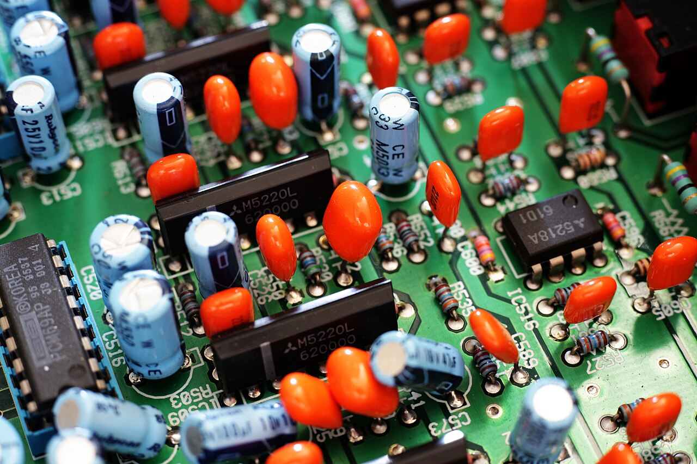
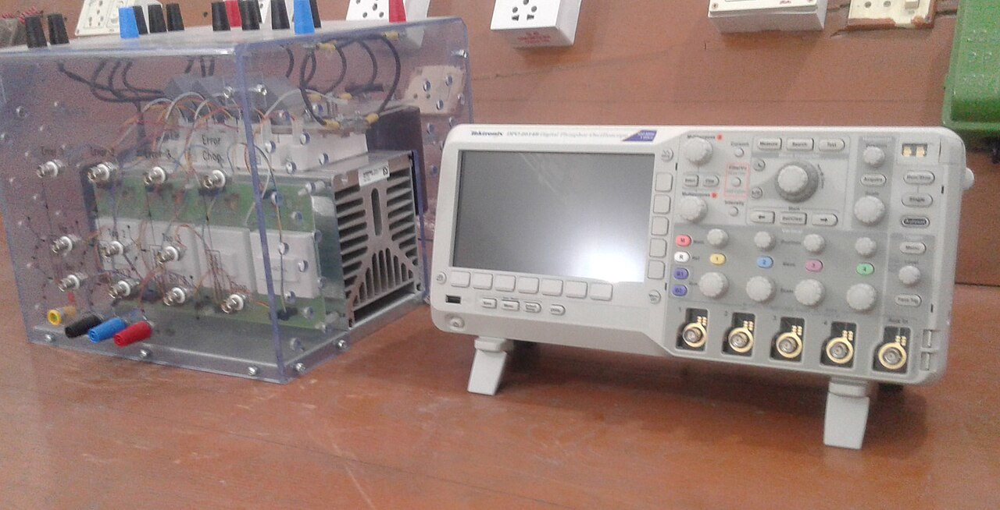
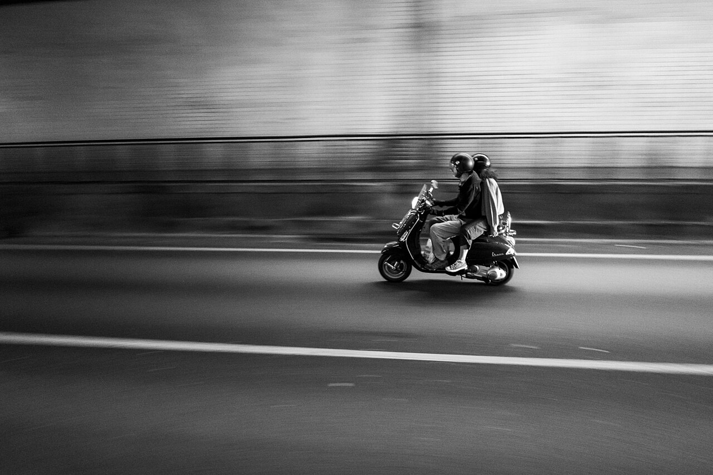

Sicurezza ESP-IDF e RED EN 18031
Credenziali Wi-Fi e token salvati in NVS cifrata, doppia partizione OTA A/B con rollback e upload HTTPS TLS 1.3 con Bearer Token.

Centralina IoT non invasiva con ESP32-S3, Smart IMU ST ISM330IS su SPI, GNSS a 10 Hz e formato .slab v1. Budget 65–85 €.
SDK ESP-IDF v6.x, controller CAN TWAI integrato per lettura passiva OBD.
-40/+85 °CBus SPI fino a 1 kHz e core AI ISPU per piega stabile e FFT vibrazioni CVT.
SPI · ISPUFix multi-costellazione a 10 Hz, TVS SMBJ18A 12V e condensatore 4700 µF per fsync() allo spegnimento.
200 msCredenziali Wi-Fi e token salvati in NVS cifrata, doppia partizione OTA A/B con rollback e upload HTTPS TLS 1.3 con Bearer Token.
Web App local-first su :8500 (Modello 3D offline, guide officina passo-passo, FFT Welch, mappa Privacy Zone 300 m) e Mosquitto Mini-UNS.
Quattro stadi incrementali senza tagliare fili originali e senza scaricare la batteria da 12 V / 6 Ah.
IMU ST ISM330IS su SPI, GNSS 10 Hz, monitor regolatore 14,0–14,8 V e baseline A/B prima e dopo il tagliando.
BASELINETransceiver SN65HVD230 in listen-only sul connettore OBD per curva CVT 7.600–8.100 rpm e anelli ABS 50 fori.
PASSIVOUpload automatico TLS in garage, report HTML A/B, broker Mosquitto senza GPS raw e alert tagliandi SYM.
HOME LABWake-on-Motion ISPU a 100 µA, cut-off hardware batteria a 12,1 V e modem LTE Cat-1bis o 3GPP NTN.
OPZIONALE| Componente | Bus / GPIO ESP32-S3 | Costo |
|---|---|---|
| ESP32-S3 / C5 | Dual-SPI · UART1 · TWAI | 8–14 € |
| ST ISM330IS IMU | SPI2 (12/11/13) · CS 10 | 12–20 € |
| u-blox MAX-M10S | RX 18 · TX 17 (UART1) | 15–22 € |
| microSD 32 GB | SPI3 (36/35/37) · CS 14 | 10–14 € |
| TVS + Hold-Up + CAN | IGN 4 · CAN 5/6 · 4700 µF | 12–21 € |

| Parametro | Valore di fabbrica | Fonte |
|---|---|---|
| Valvole (< 35 °C) | IN/EX 0,12 ± 0,02 mm | TUO |
| Batteria e ricarica | 12 V 6 Ah · 14,5 +0,5 V | TUO |
| Trasmissione CVT | Cinghia lim. 17,5 mm · Rulli 18×14 | TUO |
| ABS Bosch | Anelli fonici 50 fori (3,43 cm/imp.) | XB20 |
| Tagliandi SYM | 3k · 6k · 10k · 12k km | TUO |
